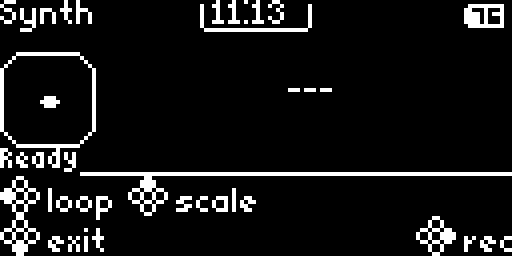

Core
Dual-core 240 MHz ESP32-S3, 16 MB flash, 8 MB PSRAM, and a 128 KB MicroPython heap.
// REPLAY 2026 BADGE
A compact guide for writing MicroPython apps, flashing firmware, and working with the Replay 2026 Badge MicroPython hardware API.
// SECTION 1
The Replay 2026 Badge is a wearable conference badge based on the ESP32-S3-WROOM-1 16N8 module. It runs Arduino C++ firmware with an embedded MicroPython v1.27 runtime so Python apps can control the hardware directly.
Dual-core 240 MHz ESP32-S3, 16 MB flash, 8 MB PSRAM, and a 128 KB MicroPython heap.
128x64 monochrome SSD1306 OLED plus an 8x8 red IS31FL3731 LED matrix with PWM per pixel.
Four face buttons, analog joystick, LIS2DH12 accelerometer, haptics, and NEC-style IR send/receive.
// SECTION 2
Use JumperIDE to connect to the badge over WebSerial, edit files on the badge, and run scripts through the MicroPython raw REPL.
Connect the badge with a USB-C cable. Open ide.jumperless.org. Click Connect, and select the USB JTAG/serial item.
WebSerialPress Run / Stop or F5. Print output and exceptions appear in the terminal pane.
raw REPLSave with Ctrl + S or the green Save button to write files to the badge filesystem.
filesystem
The file tree exposes /apps, /lib, and
/tests.
// SECTION 3
Ignition is the Temporal-powered flashing system we built to bulk
flash the Replay 2026 badge fleet. It is the default path for the
public replay2026 firmware target whether you are
flashing one badge or a table full of badges. Direct PlatformIO
commands are available as a secondary developer option. Get the
source from the
GitHub repo
before building or flashing locally.
# Default path
cd ignition
./setup.sh
./start.sh -e replay2026 --firmware-dir ../firmware
# Direct PlatformIO path
cd firmware
pio run -e replay2026
pio run -e replay2026 -t upload
pio run -e replay2026 -t uploadfs
Public releases provide replay2026-factory-16MB.bin for
users who do not want to build locally. Download precompiled firmware
from the
GitHub Releases page, then flash it with Ignition:
./start.sh --no-build --factory-image ~/Downloads/replay2026-factory-16MB.bin.
Factory flashing wipes existing on-badge data.
// SECTION 4
Start with OLED output, an LED matrix image, and a clean exit. Add
input with button_pressed() for one-shot events and
button() for held controls.
import time
oled_clear()
oled_println("Hello")
oled_println("Badge")
oled_show()
led_override_begin()
led_show_image(IMG_HEART)
time.sleep(3)
led_clear()
led_override_end()// SECTION 5
Put small experiments directly in /apps. For larger
apps, create a folder with main.py and import sibling
modules from that folder.
Great for short demos. Badge functions are auto-imported in the entry script.
Use sys.path.insert() in main.py, then
delegate to modules.
Use regular open() and os APIs for app
state and local files.
// SECTION 6
Supported modules include sys, os,
time, random, math,
cmath, struct, array,
binascii, json, collections,
errno, gc, io,
micropython, and badge.
Use time.sleep_ms(), ticks_ms(), and
ticks_diff() for timing.
Keep foreground loops cooperative. Sleep briefly so input and render work stays responsive.
There is no pip package install path. Put shared local code in
/lib.
The Python heap is 128 KB. Use gc.collect() in
long-running apps.
// SECTION 7
The hardware APIs are grouped by device. Most display work is
buffered, so draw first and call oled_show() when the
frame is ready.
oled_clear(), oled_println(), oled_set_pixel(), oled_show()
led_set_pixel(), led_show_image(), led_start_animation()
button(), button_pressed(), button_held_ms()
joy_x() and joy_y() return 0-4095 raw ADC values.
imu_tilt_x(), imu_tilt_y(), imu_face_down(), imu_motion()
haptic_pulse(), haptic_strength(), tone(), no_tone()
ir_start(), ir_send(), ir_read(), ir_stop()
// SECTION 8
The firmware exposes the current OLED framebuffer through the dev API, and the repo includes a helper that turns it into a scaled PNG. Use it for app documentation, bug reports, and before/after UI reviews.

cd firmware
~/.platformio/penv/bin/python scripts/capture_oled_fb.py --list-ports
~/.platformio/penv/bin/python scripts/capture_oled_fb.py \
--out ../docs/assets/screenshots/my-screen.png
# Multiple badges connected? Pick one explicitly.
~/.platformio/penv/bin/python scripts/capture_oled_fb.py \
--port /dev/cu.usbmodemXXX \
--out ../docs/assets/screenshots/my-screen.pngClose JumperIDE, serial monitors, and Ignition before capturing. The helper uses the badge raw REPL, so only one process can own the serial port at a time.
// SECTION 9
The ESP32-S3 radio can join 2.4 GHz networks only. When a saved
network fails to connect, use MicroPython's network.WLAN
module to confirm the badge can see the SSID before debugging
credentials.
import network, time
wlan = network.WLAN(network.STA_IF)
wlan.active(True)
time.sleep(1)
for ssid, bssid, channel, rssi, authmode, hidden in wlan.scan():
name = ssid.decode("utf-8", "ignore")
print(name, "channel", channel, "rssi", rssi, "auth", authmode)
wlan.active(False)The scan output lists visible SSIDs, channels, RSSI, and auth modes. It never includes passwords. If nearby 2.4 GHz networks appear but the target SSID does not, check whether the network is 5 GHz only, hidden, out of range, or blocked by venue configuration.
// SECTION 10
Use mouse overlay for point-and-click interfaces, IMU orientation for nametag-aware apps, and native UI chrome for firmware-matched headers, footers, and button glyphs.
Enable cursor mode with mouse_overlay(True) and read clicks with mouse_clicked().
Use imu_face_down() or tilt values to show idle, QR, or pause states.
Use ui_header(), ui_action_bar(), or badge_ui helpers.
// SECTION 11
IR is line-of-sight. Start IR mode first, exchange compact or multi-word frames, poll quickly, then stop and flush when done.
ir_start()
ir_flush()
ir_send(0x42, 0x01)
while not ir_available():
time.sleep_ms(20)
addr, cmd = ir_read()
ir_stop()// SECTION 12
Exit: Hold all four face buttons for about one second to force-exit.
Memory: 128 KB heap. Reuse buffers and call gc.collect().
Display: Call oled_show() after drawing.
Matrix: Use override mode before direct matrix drawing.
IR: Read within about 50 ms per frame and call ir_stop().
Input: Read button_pressed() once per loop.
// QUICK REFERENCE
OLED: oled_clear() -> oled_println() -> oled_show()
Matrix: led_show_image(IMG_HEART), led_set_frame(rows, brightness)
Buttons: button_pressed(BTN_CONFIRM), button(BTN_UP)
Joystick: joy_x() and joy_y() return 0-4095
Haptics: haptic_pulse(), tone(440, 200), no_tone()
IR: ir_start() -> ir_send(a, c) -> ir_read() -> ir_stop()
IMU: imu_tilt_x(), imu_motion(), imu_face_down()
Mouse: mouse_overlay(True), mouse_clicked()
Files: open("/apps/my_app/save.json", "w").write(data)
Exit: exit() or hold all four face buttons